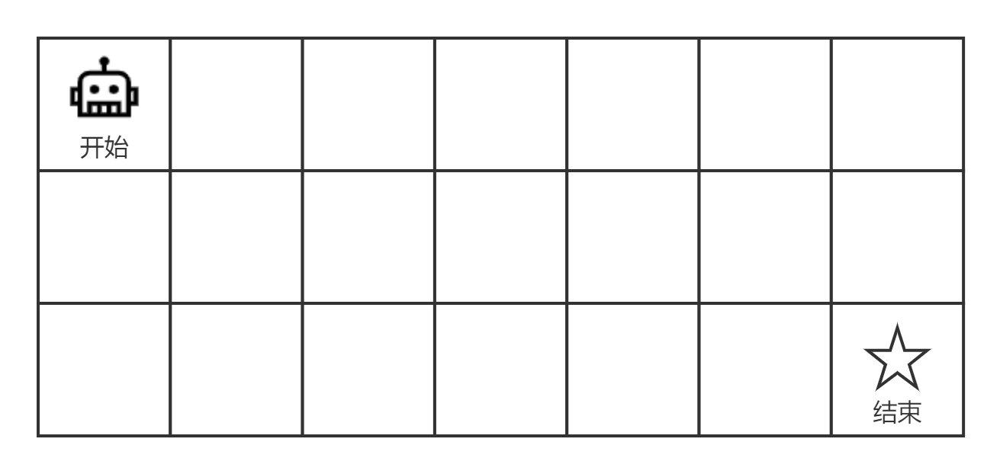
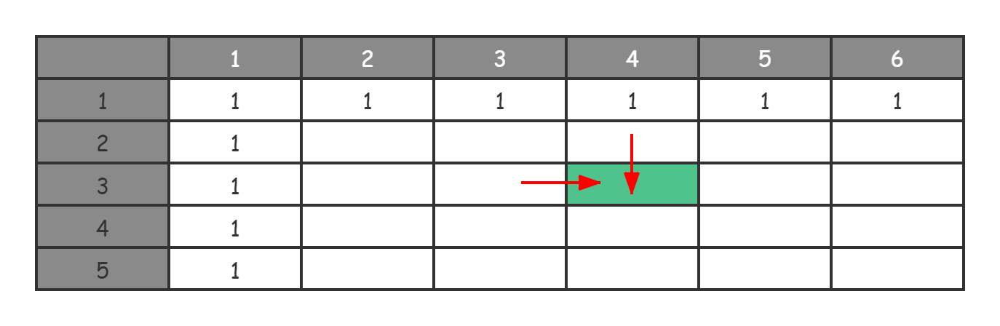

- 00 导读 动态规划问题纷繁复杂，如何系统学习和掌握它？.md.html
- 00 开篇词 为什么大厂都爱考动态规划？.md.html
- 01 硬币找零问题：从贪心算法说起.md.html
- 02 暴力递归：当贪心失效了怎么办？.md.html
- 03 备忘录：如何避免递归中的重复计算？.md.html
- 04 动态规划：完美解决硬币找零.md.html
- 05 面试即正义第一期：什么样的问题应该使用动态规划？.md.html
- 06 0-1背包：动态规划的Hello World.md.html
- 07 完全背包：深入理解背包问题.md.html
- 08 子数组问题：从解决动归问题套路到实践解题思路.md.html
- 09 子序列问题：详解重要的一大类动态规划问题.md.html
- 10 面试即正义第二期：常见的动态规划面试题串烧.md.html
- 11 动态规划新问题1：攻破最长递增子序列问题.md.html
- 12 动态规划新问题2：攻破最大子数组问题.md.html
- 13 动态规划算法设计的关键：最优子结构与状态依赖.md.html
- 14 面试即正义第三期：刷题指南，熟能生巧.md.html
- 15 课程回顾与总结（上）.md.html
- 16 课程回顾与总结（下）.md.html
- 加餐 买卖股票：常见且必考的动态规划面试题.md.html
- 结束语 在我家的后院养长颈鹿.md.html
- 捐赠
16 课程回顾与总结（下）
你好，我是卢誉声。今天我们来继续课程总结，重点回顾几类经典的动态规划问题，并尝试使用我们的解题框架去解决它们。这几类问题我们前面都详细讲过，再带你巩固一遍。
经典的动态规划问题
动态规划的问题主要分为三类：
- 求最优解（最大值和最小值）：从一系列方案中寻找最优解决方案；
- 求方案总数：计算满足要求的解决方案的数量；
- 求可行性（True或False）：确定提出的问题是否存在可行方案。
下面我们分别来看看这几类问题的代表性问题。
1. 背包问题
首先我们来看下背包问题，背包问题是一类非常经典的最优化问题，一般都是希望得到背包可以容纳的最大物品价值，是求最优解的问题代表。
背包问题有很多类，常见的背包问题有0-1背包、完全背包、多重背包等，再多就是在这些问题上的变种和延伸。但是无论是什么问题，基本都逃不过一个标准的题目描述模板。
问题：给你一个可放总重量为 W 的背包和 N 个物品，对每个物品，有重量 w 、价值 v 和数量3个属性，那么第 i 个物品的重量为 w[i]，价值为 v[i]，数量为k[i]（k≥1）。现在让你用这个背包装物品，问这个背包最多能装的价值是多少？
让我们来将几类背包问题对号入座，套入这个模板里面。
首先是0-1背包，所谓0-1背包就是每个物品最多只能选择1个，所以要不选择 0 个，要不选择 1 个，因此我们称之为0-1背包。所以0-1背包也就是说所有物品的数量 k[i] 都为 1。
接着是完全背包，所谓完全背包就是每个物品的数量都是无限的，这种情况下我们可以认为物品的数量 k[i] 都是正无穷，或者认为 k[i] 最大值为 W/w[i]，其中 W 是背包的容量，w[i] 是物品的重量，背包里的物品数量是不可能大于 W/w[i] 的。
最后就是多重背包，所谓多重背包就是给予每个物品固定的数量，也就是指定了 k[i]。这也就是问题模板本身。
所以无论是0-1背包还是完全背包，其实都是多重背包的特例，只要我们知道背包问题的模板是什么样子，然后就可以知道解决所有背包问题的套路。
下面我们根据动态规划解题框架来给出背包问题的解题框架。
首先，我们确定初始化状态。当背包的容量为 0 时肯定无法选择物品，此时物品数量为 0，同时如果压根儿就没有物品可选，那么自然背包的重量也为 0。也就是当没有物品时重量为 0；而重量为 0 时显然物品数量也为 0。
接着，我们确定状态参数，也就是会影响我们进行决策的变量：
- 背包内物品的数量 N 在增加，它是一个变量；
- 同时，背包还能装下的重量 W 在减少，它也是一个变量。
因此，当前背包内的物品数量 N 和背包还能装下的重量 W 就是这个动态规划问题的状态参数。
然后，我们再来看如何进行决策。这里的区别，由于每种物品的数量为k[i]，因此我们可以将同一种物品多次放入背包。
因此，对于第 tn 种物品，我们有 k 种选择（其中 0 ≤ k[tn] * w[tn] ≤ W）：我们可以从 0 开始，拿第 0 件、第 1 件、第 2 件……直到第 (W / w[tn]) 件物品为止。然后在这么多子问题下，选择最优的那一种情况。
所以，我们可以看出，背包问题决策的核心在于，针对一种物品，它需要考察拿不同数量的情况下的最优解。也就是针对当前物品，应放入多少件当前物品，价值最大。
最后，动态规划是需要一个备忘录来加速算法的。由于有两个状态参数，因此我们考虑使用二维数组来存储子问题的答案。跟之前一样，为了通用起见，我将其命名为 DP[tn][rw]，它的含义是：背包容量还剩 rw 时，放入前 tn 种物品时的最大价值。
现在，我们根据解题分析写出通用的背包状态转移方程。它是这样的：
\[DP(tn, rw)=\\left\\{\\begin{array}{c}- 0, tn<=0\\\\\\- 0, rw<=0\\\\\\- DP(tn-1,rw), rw<w\[tn\]\\\\\\- max\\{ DP(tn-1,rw-k\*w\[tn\])+k\*v\[tn\] \\},(0\\leqq k \\leqq min(k\[tn\], rw/w\[tn\]))- \\end{array}\\right.\]
我们对号入座，根据这个通用的状态转移方程来看看0-1背包和完全背包的状态转移方程。
首先是0-1背包，在0-1背包中 k[tn] 固定为 1，因此如果将 k[tn] 替换为 1，方程可以简化为：
\[DP(tn, rw)=\\left\\{\\begin{array}{c}- 0, tn<=0\\\\\\- 0, rw<=0\\\\\\- DP(tn-1,rw), rw<w\[tn\]\\\\\\- max\\{ DP(tn-1,rw-k\*w\[tn\])+k\*v\[tn\] \\},(0\\leqq k \\leqq min(1, rw/w\[tn\])) \\\\\\- \\end{array}\\right.\]
同时，由于 k 其实只有两种取值，一种是 0，一种是 1。如果 k 为 0，表示不放入该物品，因此 DP(tn,rw) 的结果为 DP(tn-1,rw)，如果 k 为 1，表示放入该物品，因此 DP(tn,rw) 的结果为DP(tn-1, rw-w[tn])+v[tn]，我们需要从中取最大值，因此 DP(tn,rw) 的最终结果就是两者最大值，所以最后方程可以被简化成如下所示：
\[DP(tn, rw)=\\left\\{\\begin{array}{c}- 0, & tn<=0\\\\\\- 0, & rw<=0\\\\\\- DP(tn-1,rw), & rw<w\[tn\]\\\\\\- max(DP(tn-1,rw-w\[tn\])+v\[tn\], DP(tn-1, rw)), & otherwise \\\\\\- \\end{array}\\right.\]
接下来是完全背包问题。完全背包问题中只不过将k[i]变成了无穷大，对整个方程并没有什么其它影响，因此我们可以直接将状态转移方程改写为：
\[DP(tn, rw)=\\left\\{\\begin{array}{c}- 0, tn<=0\\\\\\- 0, rw<=0\\\\\\- DP(tn-1,rw), rw<w\[tn\]\\\\\\- max\\{ DP(tn-1,rw-k\*w\[tn\])+k\*v\[tn\] \\},(0\\leqq k \\leqq rw/w\[tn\])- \\end{array}\\right.\]
这里只是将方程中k的最大值调整为 rw/w[tn]，这是因为每个物品有无穷多个，所以到底最多能放下多少物品取决于背包的剩余重量除以物品重量。背包的模板代码如下所示。
Java 实现：
int bag(int[] w, int[] v, int[] k, int N, int W) {
// 创建备忘录
int[][] dp = new int[N+1][W+1];
// 初始化状态
for (int i = 0; i < N + 1; i++) { dp[i][0] = 0; }
for (int j = 0; j < W + 1; j++) { dp[0][j] = 0; }
// 遍历每一件物品
for (int tn = 1; tn < N + 1; tn++) {
// 背包容量有多大就还要计算多少次
for (int rw = 1; rw < W + 1; rw++) {
dp[tn][rw] = dp[tn-1][rw];
int maxK = Math.min(k[tn], rw / w[tn]);
// 根据rw尝试放入多次物品，从中找出最大值，作为当前子问题的最优解
for (int k = 0; k <= maxK; k++) {
dp[tn][rw] = Math.max(dp[tn][rw], dp[tn-1][rw-k*w[tn]] + k*v[tn]);
}
}
}
return dp[N][W];
}
C++ 实现：
int DP(const std::vector<int>& w, const std::vector<int>& v, const std::vector<int>& k, int N, int W) {
int dp[N+1][W+1]; // 创建备忘录
memset(dp, 0, sizeof(dp));
// 初始化状态
for (int i = 0; i < N + 1; i++) { dp[i][0] = 0; }
for (int j = 0; j < W + 1; j++) { dp[0][j] = 0; }
// 遍历每一件物品
for (int tn = 1; tn < N + 1; tn++) {
// 背包容量有多大就还要计算多少次
for (int rw = 1; rw < W + 1; rw++) {
dp[tn][rw] = dp[tn-1][rw];
int maxK = min(k[tn], rw / w[tn]);
// 根据rw尝试放入多次物品，从中找出最大值，作为当前子问题的最优解
for (int k = 0; k <= maxK; k++) {
dp[tn][rw] = max(dp[tn][rw], dp[tn-1][rw-k*w[tn]] + k*v[tn]);
}
}
}
return dp[N][W];
}
至于如何通过这个模板得到0-1背包和完全背包代码，就要看你能不能理解整个模板的思路，举一反三自己写出实际的代码了。
2. 路径问题
在第10课中介绍的路径问题是求解总方案数量的经典代表问题。我们回顾一下这个问题的内容和描述。
问题：一个机器人位于一个 m * n 网格的左上角 （起始点在下图中标记为“开始” ），机器人每次只能向下或者向右移动一步，现在机器人试图达到网格的右下角（在下图中标记为“结束”）。问总共有多少条不同的路径？

上图是一个7 * 3的网格，我们希望知道从起点到终点能有多少条不同的路径。
示例：
输入：m = 3, n = 2
输出： 3
解释: 从左上角开始，总共有 3 条路径可以到达右下角：
1. 向右 -> 向右 -> 向下
2. 向右 -> 向下 -> 向右
3. 向下 -> 向右 -> 向右
首先确定初始化状态。从原问题可以看出，初始化状态是网格的第一行和第一列。网格的第一行永远只能从左侧的格子往前走，第一列永远只能从上方的格子向下走。由于我们只能向右或向下走，因此，第一行和第一列的格子永远只能存在 1 条路径。
接着确定状态参数。原问题的状态参数其实就是格子的行数和列数，只要知道行数 i 和列数 j 就能知道这个格子的路径数量。因此，我们得到两个状态参数，分别是代表行数的 i 和代表列数的 j。
然后就要进行状态存储。这里我们的状态存储空间是一个二维数组 DP[i][j]，表示第 i 行、第 j 列的路径数量。你可以通过以下图示加深理解。

从表格中我们可以看出，第一行和第一列是格子的序号。其中填写了 1 的格子，就是初始状态，深色的格子就是DP[i][j]，表示第 i 行、第 j 列的路径数量。我们可以计算一下，这个格子的路径数量是 DP[i-1][j] + DP[i][j-1]。
现在一切就绪，我们来写状态转移方程。
\[DP(i, j)=\\left\\{\\begin{array}{c}- DP\[i-1\]\[j\] + DP\[i\]\[j-1\], & if \\ i\\ne0\\ or\\ j\\ne0 \\\\\\- 1, & i=0\\ and\\ j=0- \\end{array}\\right.\]
这个状态转移方程由初始状态和后续的状态转移构成。当 i 和 j 为 0 时（假定格子从 0 开始而不是 1 开始），函数结果就是 1；否则，就是 DP[i- 1][j] + DP[i][j-1]。
现在可以根据状态转移方程写出代码。
Java 实现：
int getPathCount(int m, int n) {
int[][] dp = new int[m][n];
// 初始化状态
for (int i = 0; i < m; i ++) { dp[i][0] = 1; }
for (int j = 0; j < n; j ++) { dp[0][j] = 1; }
for (int i = 1; i < m; i ++) { // 状态转移过程
for (int j = 1; j < n; j ++) {
dp[i][j] = dp[i - 1][j] + dp[i][j - 1];
}
}
return dp[m - 1][n - 1]; // 输出答案
}
C++ 实现：
int GetPathCount(int m, int n) {
int dp[m][n];
// 初始化状态
for (int i = 0; i < m; i ++) { dp[i][0] = 1; }
for (int j = 0; j < n; j ++) { dp[0][j] = 1; }
for (int i = 1; i < m; i ++) { // 状态转移过程
for (int j = 1; j < n; j ++) {
dp[i][j] = dp[i - 1][j] + dp[i][j - 1];
}
}
return dp[m - 1][n - 1]; // 输出答案
}
在第10课中，我还提到了考虑障碍物的路径规划问题，大家可以去回顾一下，和不带障碍物的问题的解决方案其实没有本质区别。
3. 跳跃游戏
前面我们回顾了最优解和方案总数的代表性问题，现在我们再回顾一下可行性问题（True或False）。这类问题其实一般涵盖在第一类和第二类的问题解决思路中，我们完全可以通过问题的转化，将其它类型的问题转化成求可行性问题。
现在我们看一下学习过的代表性问题——跳跃游戏。
题目：给出一个非负整数数组 A，你最初定位在数组的第一个位置。数组中的每个元素代表你在那个位置可以跳跃的最大长度。判断你是否能到达数组的最后一个位置。
示例1：
输入：A = [2, 3, 1, 1, 6]
输出： True
解释: 我们可以先跳 1 步，从位置 0 到达位置 1, 然后再从位置 1 跳 3 步到达最后一个位置。
首先确定初始化状态。这个问题的初始化状态就是 0 这个位置。因为这个位置是出发点，因此肯定可以到达，所以我们可以将其初始化成 True。而对其它位置，则可以根据状态转移方程来计算得出。
接着确定状态参数，只有数组的位置是变化的，因此状态参数就是当前位置 i。
然后是状态存储，由于只有一个状态参数，因此我们可以使用一维数组 DP[i] 来表示能否从出发点到达位置 i。
最后确定状态转移与决策。如果我们想要知道能否到达位置 i，就需要逐个看前面的位置，判定能否从位置 i-1、i-2、i-3 … 跳到位置 i 上。然后，再看 i-1 这个位置是否能够到达。
通过以上分析，我们就可以给出状态转移方程的定义了。
\[DP\[i\]=\\left\\{\\begin{array}{c}- True, & i = 0 \\\\\\- (DP\[j\] = true)\\ and\\ (max(A\[j\]+j) \\geq i), & i \\ne 0\\ and\\ j < i \\\\\\- \\end{array}\\right.\]
代码如下所示，具体代码以及解释可以参见第10课。
Java 实现：
public boolean canJump(int[] nums) {
int n = nums.length;
if (n <= 1) { return true; }
boolean[] dp = new boolean[n];
// 初始化状态
for (int i = 0; i < n; i++) { dp[i] = false; }
dp[0] = true;
for (int i = 1; i < n; i++) {
for (int j = 0; j < i; j++) { // j < i
if (dp[j] && j + nums[j] >= i) {
dp[i] = true;
break;
}
}
}
return dp[n - 1]; // 输出答案
}
C++ 实现：
bool canJump(vector<int>& nums) {
int n = nums.size();
if (n <= 1) { return true; }
bool dp[n]; memset(dp, 0, sizeof(dp));
dp[0] = true; // 初始化状态
for (int i = 1; i < n; i++) {
for (int j = 0; j < i; j++) { // j < i
if (dp[j] && j + nums[j] >= i) {
dp[i] = true;
break;
}
}
}
return dp[n - 1]; // 输出答案
}
4. 其它问题
除了上面提到的几类代表性问题，还有两类问题是需要你重点关注的，分别是子数组问题和子序列问题。
所谓子数组问题，就是从一个数组中寻找满足条件，并可以得到最优结果的一个最长的子数组序列的问题，子数组序列一定是求一个连续的序列。
而子序列问题要更复杂一些，因为子数组问题是连续的，而子序列问题是不连续的。比如说字符串 “I wanna keep a giraffe in my backyard” 的一种子序列就可以是 “Igbackd”。因此子序列问题往往比子数组问题更加难以找到头绪。
关于子数组问题我们在第8课和第12课有非常详细的讲解，子序列问题我们在第9课和第11课中做了详细的陈述，希望你可以重点学习一下这几节课的内容，牢固掌握这些常见的动态规划题型。
剩下还有各种各样的动态规划问题就需要大家自己在各类 OJ（Online Judge）网站上多多练习，然后积累经验，让自己可以更加熟练地解决面试中可能出现的动态规划问题了。
动态规划的优化
我们现在回归并总结一下动态规划的优化问题。
动态规划的最终目的是降低问题解决方案的时间复杂度，动态规划在缩小问题规模的同时，通过备忘录记录已经求解过的子问题的解，利用备忘录避免对同一个子问题的重复计算，从而减少了冗余。但动态规划往往仍然存在冗余。主要包括求解无用的子问题，对结果无意义的引用等等。
根据动态规划的状态转移方程分析套路，动态规划的时间复杂度受到三个因素影响：
- 状态总数；
- 每个状态转移的状态数；
- 每次状态转移的时间。
时间复杂度 = 状态总数 * 每个状态转移的状态数 * 每次状态转移的时间。
因此，我们通常就会通过减少状态总数、减少每个状态转移的状态数或者减少每次状态转移的时间，来进一步优化动态规划的时间复杂度。
另一方面，我们知道动态规划是一种利用空间换取时间的方法，所以对空间复杂度的优化也是重中之重。影响空间复杂度的因素主要包括状态总数和每个状态需要存储的数据数量。因此我们一般会从状态总数和存储数据数量这两方面进行优化。
这里我们会发现，如果我们能够减少状态总数，一般可以同时减少时间复杂度和空间复杂度，就可以一箭双雕，这就是我们常说的状态压缩。因此我们在初步解决一个问题后会进一步分析问题的状态参数是否冗余，一旦有冗余就需要进行处理，最后得到比较低的时间复杂度和空间复杂度。
除了这些方法，还有一些常用的技巧会用在空间复杂度优化上，比如常见的就是滚动数组，简而言之，一个问题求解的时候可能只会依赖于其前 k 个子问题，这种情况下我们的备忘录就只需要永远保留 k+1 项的结果，然后通过滚动数组的方式利用备忘录。我们在做很多问题优化的时候都使用了这种技巧，你可以回顾一下。
但是无论如何，动态规划的优化是比写出基础的动态规划方程更难的能力，因此需要大家做每一道动态规划题目的时候都尽量去思考问题是否适用于动态规划，是否有多余的状态参数，状态存储空间是否能压缩等等，只有遇到过更多的问题，积累了更多经验，才能在面试中游刃有余。
课程总结
动态规划思想是如今技术面试当中特别爱考察的一类重要问题，它出现在技术面中的比重与日俱增。因此，我们有必要有针对性地攻破这一难关，特别是系统的经验总结，外加适当强度的练习。
我在第14课总结了刷题指南，希望你能够沿着本专栏的整体思路，去尝试解决那些问题。你最终一定会发现，所有的问题都能够追溯到我为你总结的解题模板上去。刷题的目的在于灵活运用动归解题模板，养成解题思路和习惯，那么你的目标、我的目标，就都达成了。
课后思考
除了我今天为你勾勒出的动态规划知识点总结外，你觉得还有什么知识点是值得关注的？不妨谈谈你的心得体会。
期待你的留言。如果今天的内容对你有所帮助，也欢迎把文章分享给你身边的朋友，邀请他一起练习！
© 2019 - 2023 Liangliang Lee. Powered by gin and hexo-theme-book.